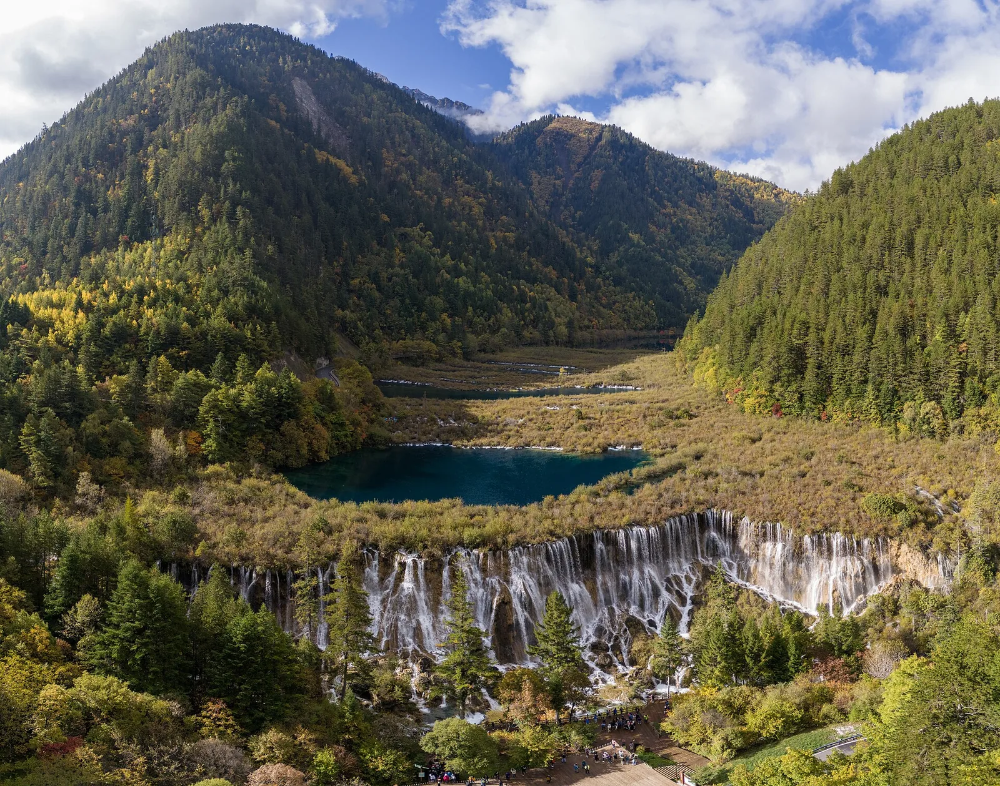
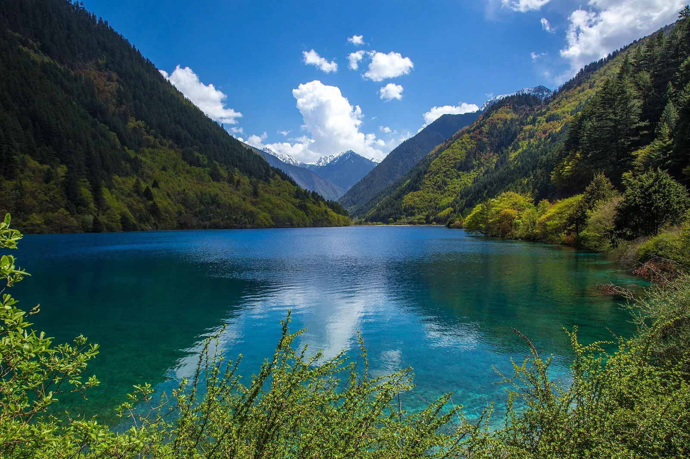

OV1 · Otros vuelos
OV1 · Andere Flüge
OV1 · Other flights
Jiuzhaigou
Información
El valle de Jiuzhaigou se extiende por 72.000 hectáreas en el norte de la provincia de Sichuan y trepa hasta más de 4.800 metros, con una sucesión de ecosistemas forestales distintos según la altura.
Lo que lo hace raro son sus formas kársticas cónicas y angostas, sus cascadas, y una cadena de lagunas de agua transparente que se ven azules, verdes y hasta violáceas. Viven ahí unas 140 especies de aves, además del panda gigante y el takín de Sichuan, los dos amenazados.
Information
El valle de Jiuzhaigou se extiende por 72.000 hectáreas en el norte de la provincia de Sichuan y trepa hasta más de 4.800 metros, con una sucesión de ecosistemas forestales distintos según la altura.
Lo que lo hace raro son sus formas kársticas cónicas y angostas, sus cascadas, y una cadena de lagunas de agua transparente que se ven azules, verdes y hasta violáceas. Viven ahí unas 140 especies de aves, además del panda gigante y el takín de Sichuan, los dos amenazados.
Information
El valle de Jiuzhaigou se extiende por 72.000 hectáreas en el norte de la provincia de Sichuan y trepa hasta más de 4.800 metros, con una sucesión de ecosistemas forestales distintos según la altura.
Lo que lo hace raro son sus formas kársticas cónicas y angostas, sus cascadas, y una cadena de lagunas de agua transparente que se ven azules, verdes y hasta violáceas. Viven ahí unas 140 especies de aves, además del panda gigante y el takín de Sichuan, los dos amenazados.
La UICN evalúa Jiuzhaigou como «bueno, con algunas preocupaciones». Los valores naturales se conservaron bien.
En 2017 un terremoto de magnitud 7,0 provocó cambios importantes en el paisaje; los trabajos de restauración lograron recuperar el área y sus rasgos principales. Antes de eso, la protección de algunas zonas se había visto comprometida por una infraestructura turística rápida y excesiva.
La UICN evalúa Jiuzhaigou como «bueno, con algunas preocupaciones». Los valores naturales se conservaron bien.
En 2017 un terremoto de magnitud 7,0 provocó cambios importantes en el paisaje; los trabajos de restauración lograron recuperar el área y sus rasgos principales. Antes de eso, la protección de algunas zonas se había visto comprometida por una infraestructura turística rápida y excesiva.
La UICN evalúa Jiuzhaigou como «bueno, con algunas preocupaciones». Los valores naturales se conservaron bien.
En 2017 un terremoto de magnitud 7,0 provocó cambios importantes en el paisaje; los trabajos de restauración lograron recuperar el área y sus rasgos principales. Antes de eso, la protección de algunas zonas se había visto comprometida por una infraestructura turística rápida y excesiva.
Fuentes
Quellen
Sources
- UICN, Perspectiva del Patrimonio Mundial (evaluación 2025), Jiuzhaigou Valley Scenic and Historic Interest Area — https://worldheritageoutlook.iucn.org/explore-sites/jiuzhaigou-valley-scenic-and-historic-interest-area
Galería
Galerie
Gallery


Fuentes
Quellen
Sources
- UNESCO, Centro del Patrimonio Mundial, Jiuzhaigou Valley Scenic and Historic Interest Area — https://whc.unesco.org/en/list/637/ consultado 2026-10-06abgerufen 2026-10-06accessed 2026-10-06